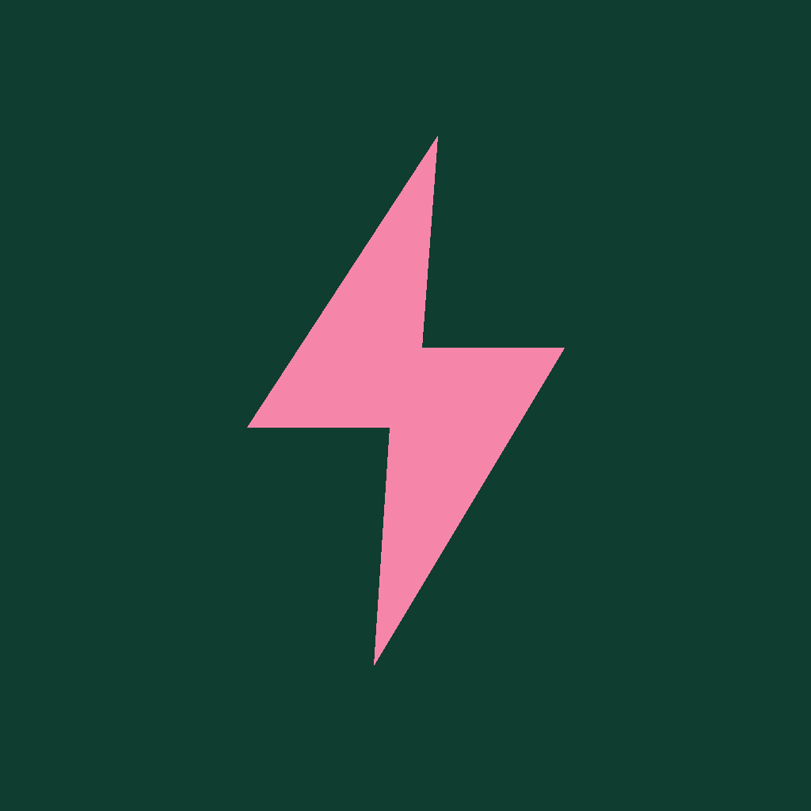
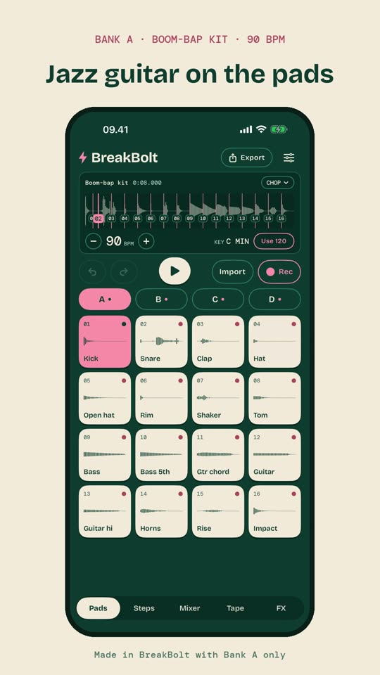
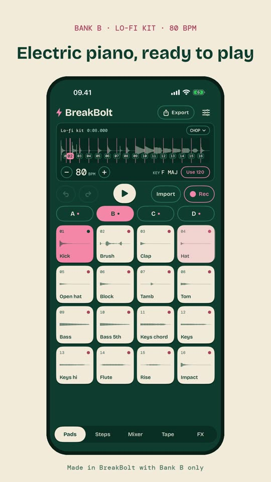
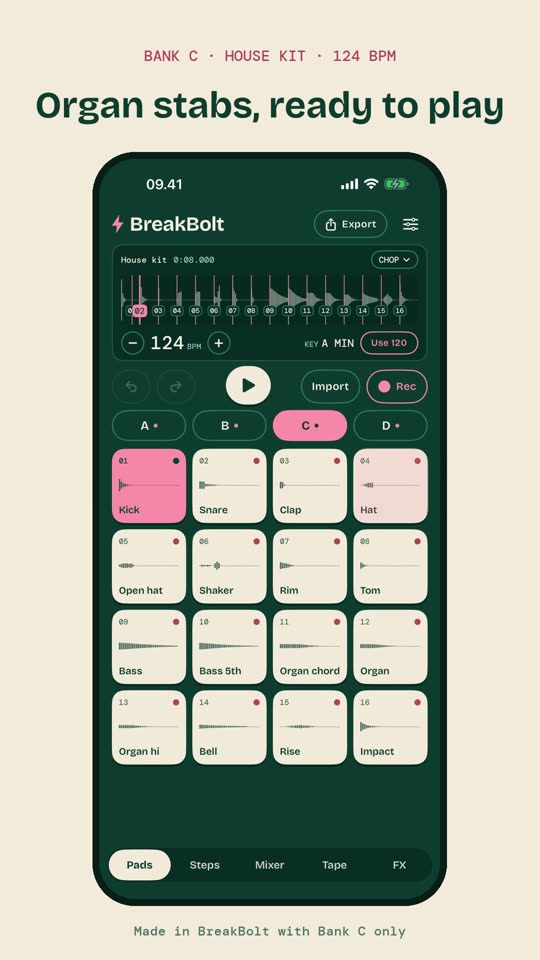
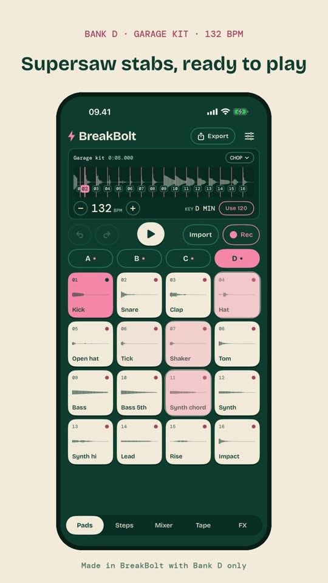
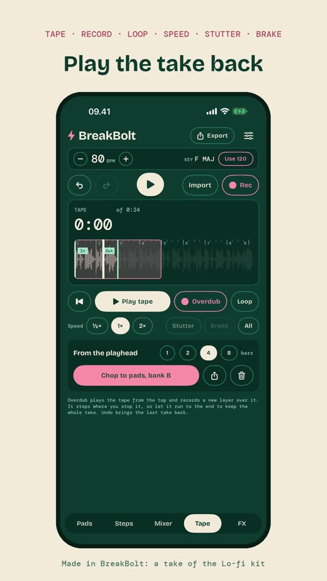

BREAKBOLT · PRESS KIT
BreakBolt
press kit.
BreakBolt is a sample-chopping beatmaker for iPhone and iPad: chop any sound into 16 pads, tap out a beat, and export a loop. It's in public beta on TestFlight. Everything here is free to use in coverage.

01FACT SHEET
BreakBolt at a glance
02DESCRIPTIONS
Ready-to-use copy
Use these as they are, or cut them down.
Chop any sound into 16 pads, tap out a beat, and export a loop, on iPhone or iPad.
BreakBolt is a sample-chopping beatmaker for iPhone and iPad. It opens with four style kits ready to play, and any sound you record or import is sliced across 16 pads. Chop, pitch, sequence, mix, play onto tape, resample, and export a loop that drops into any DAW. It all runs on the device, with no account and no subscription.
BreakBolt is a sample-chopping beatmaker for iPhone and iPad, built around one workflow: record a sound, chop it into 16 pads, tap out a beat, export it. Four style kits (boom-bap, lo-fi, house and garage) are loaded from the start. It detects key and tempo, slices on transients or on the beat grid, and gives every pad its own pitch, stretch, trim and reverse. Four banks make 64 pads playable at once. Patterns run up to four bars with swing and per-step velocity, a mixer balances every pad, a tape records the performance to loop, slow down and chop again, and resampling bounces the loop onto a pad to build on. 2,267 sounds are included, with no in-app purchases and no account.
03FEATURES
What's in version 1.0
- Four style kits loaded from the start: boom-bap, lo-fi, house and garage, each in one key with its own instrument, every pad named
- Record from the microphone, or import any audio file up to three minutes, choosing which part of a longer one
- Automatic chopping: equal, on transients, or on the beat grid, with markers you drag by hand at up to 8× zoom
- Key and tempo detection, with Scale Lock to keep pitch moves in the sample's scale
- 4 banks × 16 pads, all 64 playable at once
- Per pad: volume, pan, pitch (±12 semitones), time-stretch (0.5×–2×), reverse, name, trim of its start and end, and delete
- Patterns of 1, 2 or 4 bars with 16 or 32 steps a bar, 60–180 BPM, swing, gate, per-step velocity, randomise and a metronome with count-in
- A mixer with a fader, pan, mute and solo for every pad
- A tape that records up to five minutes of the performance, with overdub, a loop between In and Out, half and double speed, brake, stutter, and chop back onto the pads
- Master distortion, bit-crush, low/high-pass filter, tempo-synced delay, reverb and a compressor
- Resample the whole pattern onto one pad and keep building
- Export a WAV loop, a WAV of the tape, or a vertical MP4 video
- 2,267 included sounds: 56 built in plus 72 packs downloaded one at a time
- Unlimited projects, 50 steps of undo, continuous autosave and crash recovery
- Keeps playing in the background and with the screen locked
- iPad layout with an inspector beside the page in all four orientations, and both screens of iPhone Duo
- A first-launch walkthrough, one-time tips, and the full user guide one tap away in Settings
- Light, dark and system appearance
04IMAGES & VIDEO
Screenshots and videos
iPhone screenshots at full resolution (1320 × 2868), in the app's dark appearance. The ZIP above adds FX, pad settings, light mode, iPad, iPhone Duo and the icon.


Videos
One per starter kit, each made from that bank's 16 pads only, plus one for the tape. Vertical, 1080 × 1920, H.264 with sound, 24–31 seconds.





05BACKGROUND
Design decisions
The reasons behind the choices reviewers ask about most.
Workflow
One workflow, not a studio
A general-purpose music app starts by asking what you want to make. BreakBolt starts from a sound: record or pick one, and the 16 pads are ready to play.
Price
Every pack in the price
Selling sound packs separately is common in this category. In BreakBolt every pack, including packs added later, is part of the one purchase.
Privacy
Nothing leaves the device
No account, no server, no analytics. Recordings leave the phone only through the share sheet.
Timing
Scheduled on the audio clock
Steps are timed against the audio clock rather than the screen, so the beat stays in time while you scroll, open panels or switch apps.
06CONTACT
Press and review requests
BreakBolt is made by Marian Vrtik, a solo developer in Horsens, Denmark, under Apps by Marian. For interviews, a TestFlight invite, or a promo code once the app is on the App Store, email:
marian@appsbymarian.dkUsing the material
The icon, screenshots and video may be used in coverage of BreakBolt. Please don't alter the icon.
Company
Apps by Marian · Marian Vrtik
Horsens, Denmark · CVR 46671872